סטודיו התמונות של רבקה
חוברת הפעלה מצולמת · צעד אחר צעד
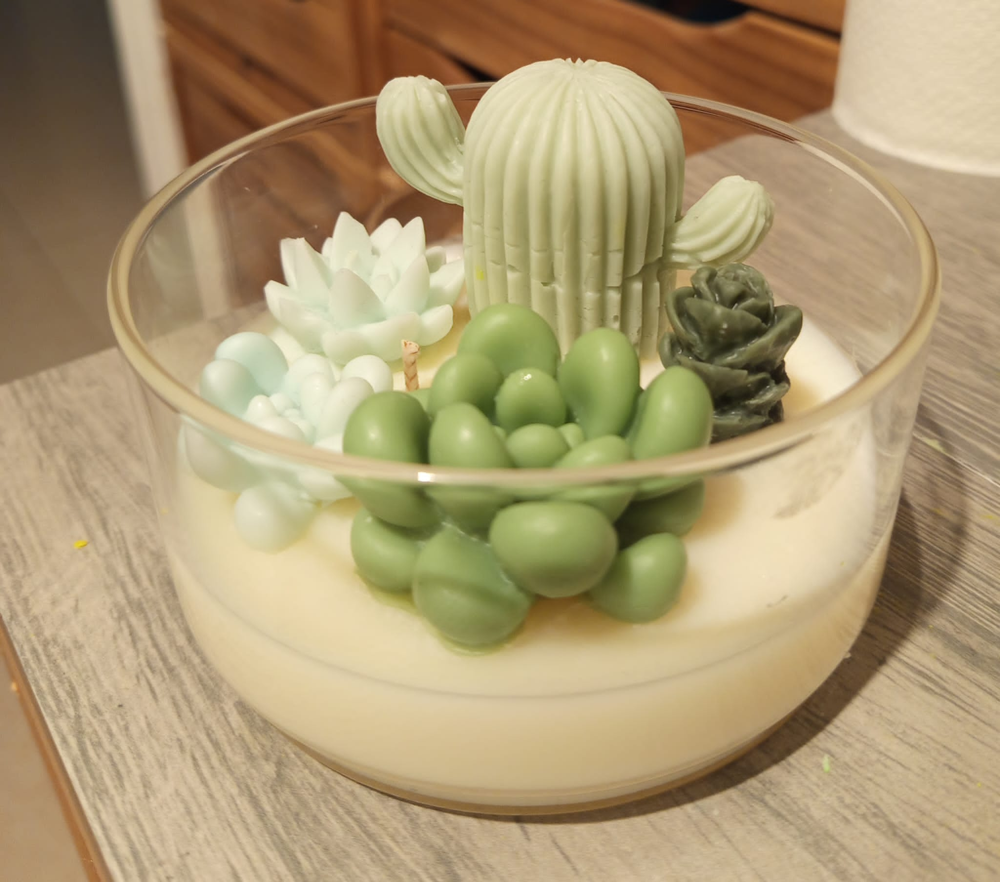
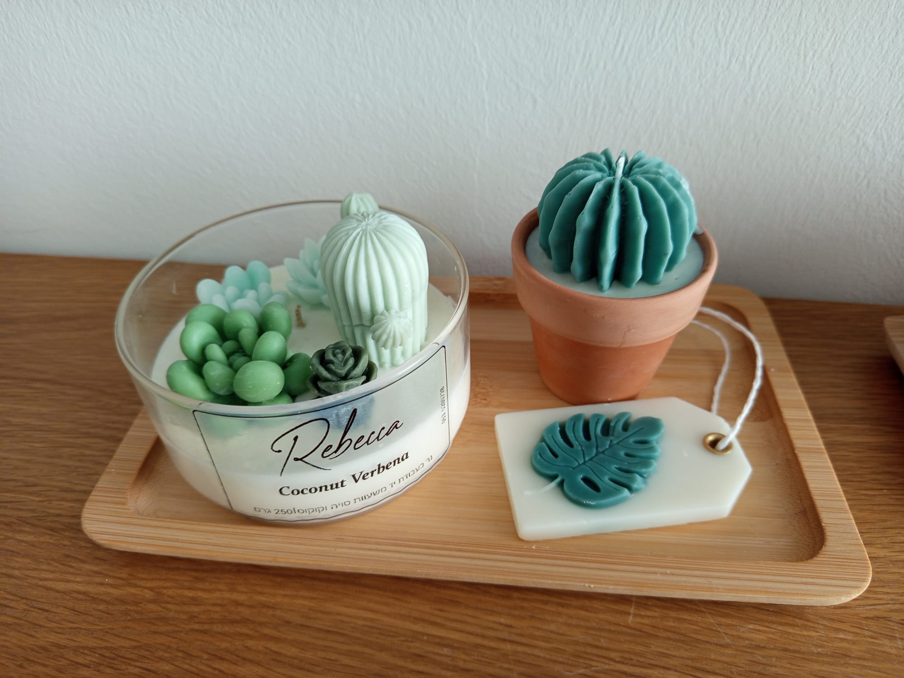
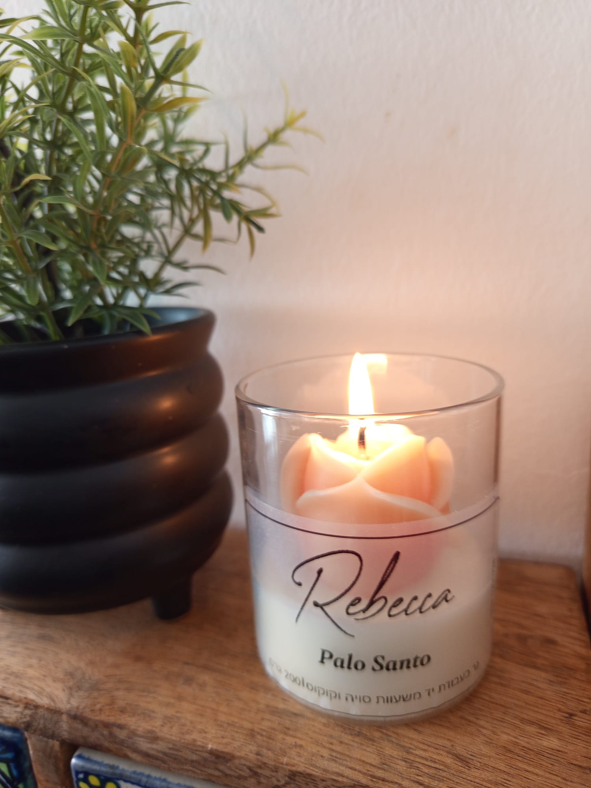
נעשה באהבה, בשבילך · מהצילום מהטלפון ועד תמונה מוכנה לפרסום
ברוכה הבאה
מה זה הסטודיו, ואיך מתחילים
הסטודיו לוקח צילום רגיל של הסבון או הנר שלך, ומכין ממנו תמונת מוצר מעוצבת: משטח, תאורה, רקע וצבעים לפי הטעם שלך. בסוף הוא מוסיף את הלוגו והסלוגן, ומכין את התמונה במידות המדויקות של אינסטגרם, פייסבוק, וואטסאפ ועוד.
מצלמים ומעליםצילום פשוט של המוצר, באור יום. לא צריך להיות מושלם. המוצר עצמו נשמר כמו שהוא.
בוחרים מראהסגנון, צבעים ופרטים. אפשר גם לשמור את הצירוף שאהבת כמתכון, ולחזור אליו בלחיצה.
לוחצים "יצירת תמונה"כחצי דקה של המתנה. אם משהו לא מוצא חן, לוחצים שוב ומקבלים גרסה אחרת.
מוסיפים לוגו וסלוגן, ושומריםהלוגו והסלוגן כבר מוכנים. אפשר להזיז אותם בעורך המיתוג, ואז "שמירה".
איך נכנסים
כתובת האתר
rebecca-photo-studio.uzan2bay.workers.dev
כדאי לשמור במועדפים, ובטלפון להוסיף למסך הבית (בעמוד האחרון בחוברת).
שם משתמש וסיסמה
שם משתמש: rebecca
סיסמה: ______________________
את הסיסמה כותבים כאן ביד, ולא בשום מקום אחר.
בכל פתיחה של האתר מתנגן סרטון קצר. אפשר לדלג עליו בלחיצה על "דילוג" או במקש Esc.
2 · סטודיו התמונות של רבקה
סיור במסך
כל המסך במבט אחד
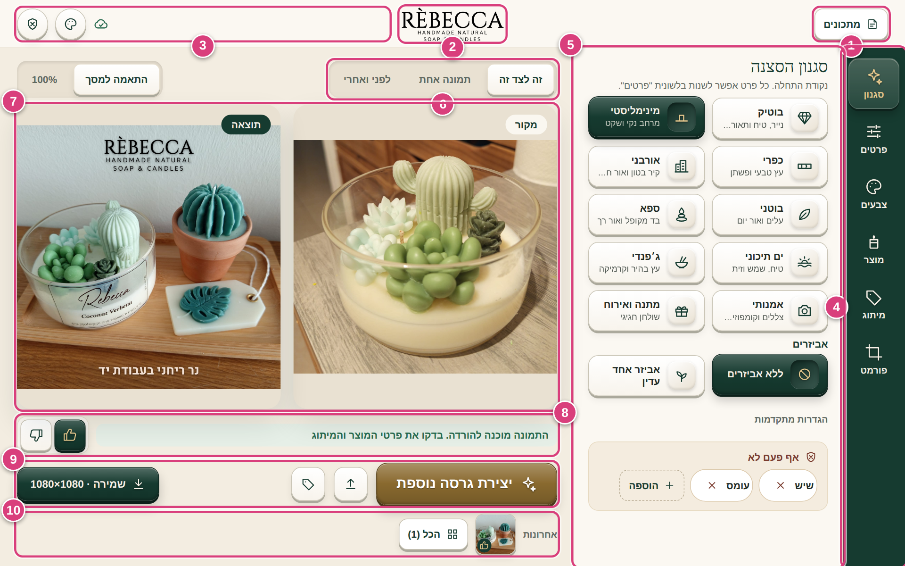
- מתכוניםצירופים שמורים של מראה, בלחיצה אחת
- הלוגו שלךבמרכז הכותרת, תמיד
- הגדרות"אף פעם לא", צבעי הממשק, וסימן הסנכרון
- פס הלשוניותסגנון, פרטים, צבעים, מוצר, מיתוג, פורמט
- לוח האפשרויותכל אפשרות היא אריח, והכול נכנס במסך בלי לגלול
- מצבי תצוגהזה לצד זה · תמונה אחת · לפני ואחרי
- התמונההמקור והתוצאה, גדולים ובמרכז
- דירוג והודעותאגודל למעלה או למטה, והסטטוס
- כפתורי פעולהיצירה, החלפת צילום, מיתוג ושמירה
- אחרונות30 התמונות האחרונות, עם ההגדרות שיצרו אותן
3 · סטודיו התמונות של רבקה
התחלה
התמונה הראשונה שלך
בפתיחה הסטודיו כבר מוגדר על "מינימליסטי שחור-לבן". אפשר פשוט להעלות צילום וללחוץ יצירה.
- העלאת צילוםלוחצים על הכפתור הירוק במרכז. בטלפון אפשר לצלם ישר מהמצלמה או לבחור מהגלריה.
- פס הלשוניותכאן בוחרים מה להשתנות. אפשר לדלג על הכול ולהשאיר את ברירות המחדל.
- מתכון פעילהשם שמופיע כאן הוא המראה הנוכחי. לחיצה פותחת את רשימת המתכונים.
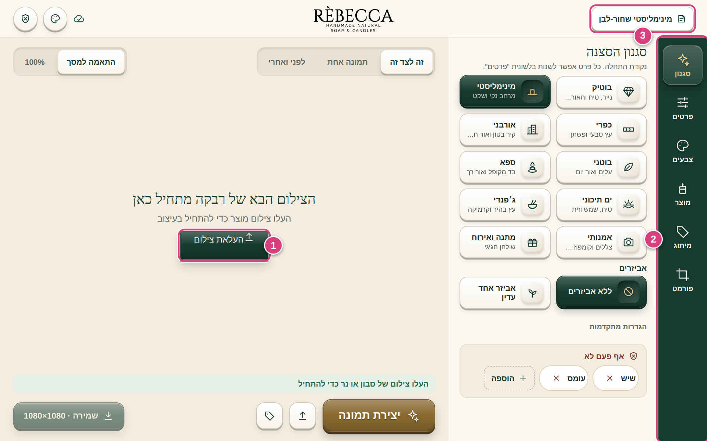
מסך הפתיחה, עוד לפני שהעלית צילום
אחרי ההעלאה
בלשונית "מוצר"בוחרים מה צילמת (נר בכלי זכוכית, סבון חתוך…).
בלשונית "סגנון"בוחרים מראה כללי, או משאירים.
לוחצים"יצירת תמונה" (הכפתור הזהוב), וממתינים.
שומרים"שמירה" בפינה. התמונה נשמרת בפורמט שבחרת.
חשוב לדעת כל לחיצה על "יצירה" יוצרת תמונה חדשה ועולה כסף קטן (כמה סנטים, לפי חשבון OpenAI של בעלך). לכן כדאי לבחור קודם, וללחוץ אחר כך. שינוי בצבעי הממשק, במצב התצוגה או בעורך המיתוג לא עולה כלום.
4 · סטודיו התמונות של רבקה
לשוניות · 1 ו־2
סגנון ופרטים
סגנון
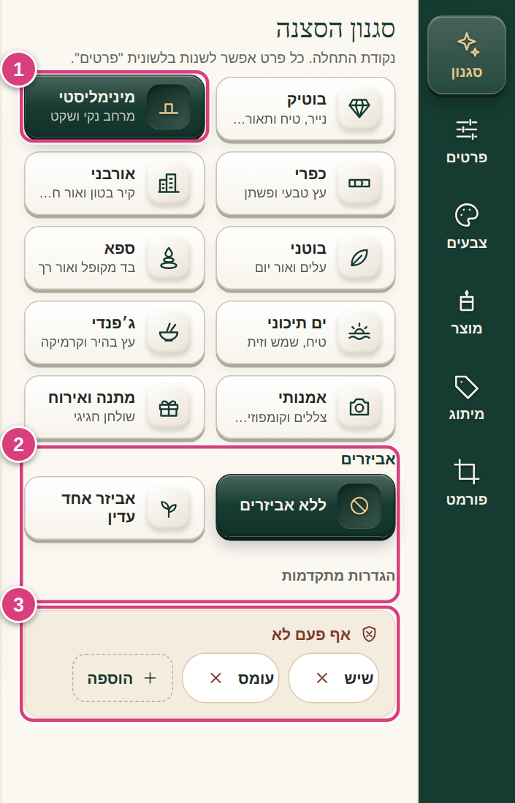
- הסגנונותבוטיק ומינימליסטי ראשונים כי הם המועדפים שלך. הסגנון קובע ברירות מחדל למשטח, לרקע ולתאורה.
- אביזרים"ללא אביזרים" (ברירת המחדל) או "אביזר אחד עדין".
- אף פעם לאדברים שלעולם לא יופיעו. כרגע: שיש ועומס. X מסיר, "הוספה" מוסיפה.
פרטים
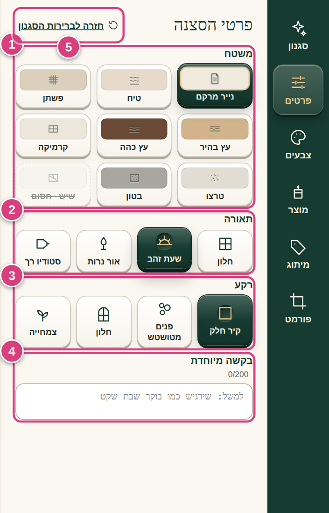
- משטחנייר, טיח, פשתן, עץ, בטון ועוד. מה שבחרת כאן גובר על ברירת הסגנון. משטח שבאף פעם לא מסומן "חסום".
- תאורהחלון, שעת זהב, אור נרות, סטודיו רך.
- רקעקיר חלק, פנים מטושטש, חלון, צמחייה.
- בקשה מיוחדתמשפט חופשי בעברית, עד 200 תווים. למשל: "שירגיש כמו בוקר שבת שקט".
- חזרה לברירות הסגנוןמאפס את הפרטים.
5 · סטודיו התמונות של רבקה
לשוניות · 3 ו־4
צבעים ומוצר
צבעים
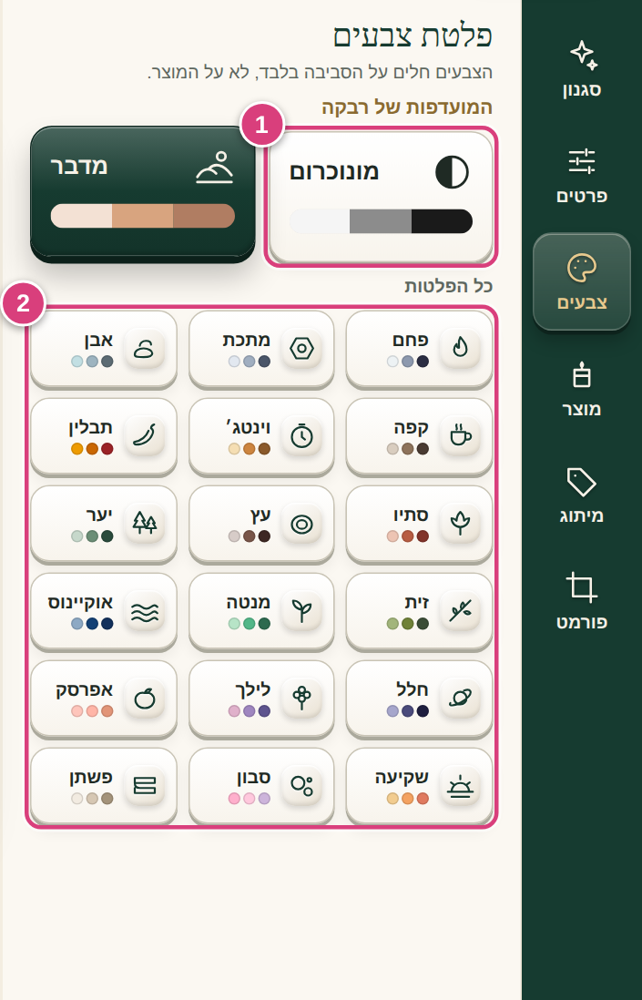
- המועדפות שלךמונוכרום ומדבר, תמיד למעלה.
- עוד 18 פלטותהצבעים חלים על הסביבה בלבד, אף פעם לא על המוצר עצמו.
הפלטה משפיעה גם על צבעי הטקסט בעורך המיתוג.
מוצר
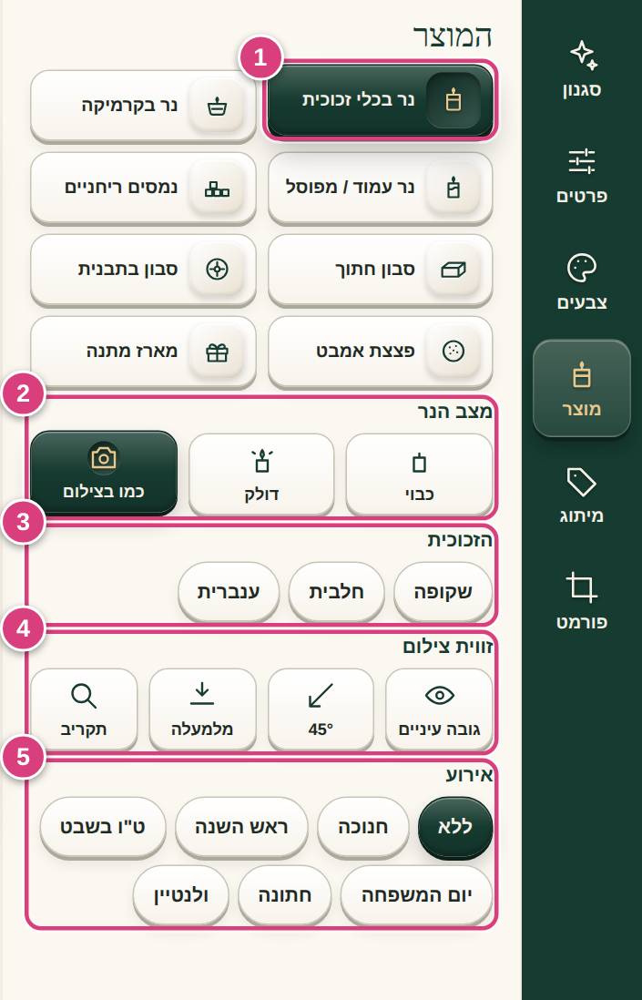
- סוג המוצרנר בכלי זכוכית, בקרמיקה, עמוד או מפוסל, נמסים, סבון חתוך, בתבנית, פצצת אמבט, מארז מתנה.
- מצב הנרכבוי, דולק, או "כמו בצילום". מופיע רק בנרות.
- הזכוכיתשקופה, חלבית או ענברית.
- זוויתגובה עיניים, 45°, מלמעלה, תקריב.
- אירועחנוכה, ראש השנה ועוד. משנה רק את הסצנה סביב, לא את המוצר.
6 · סטודיו התמונות של רבקה
חוסכים זמן
מתכונים: מראה שמור בלחיצה אחת
מתכון הוא צירוף של סגנון, פלטה, משטח ואביזרים. כשמצאת צירוף שאהבת, שומרים אותו, וממשיכים בלחיצה אחת בכל מכשיר.
- כפתור המתכוניםבפינה הימנית העליונה. מציג את שם המתכון הפעיל, ולחיצה פותחת את הרשימה.
- מתכוןלחיצה מפעילה אותו מיד: הסגנון, הצבעים והפרטים מתעדכנים.
- פח האשפהמופיע ליד המתכון הפעיל ומוחק אותו.
- שמירת מתכוןנותנים שם, "שמירה", ואפשר עד 20 מתכונים.
ארבעת המתכונים המובנים
| מתכון | המראה |
|---|
| בוטיק שחור-לבן | בוטיק · מונוכרום · נייר · בלי אביזרים |
| בוטיק מדבר | בוטיק · מדבר · טיח · אביזר אחד |
| מינימליסטי שחור-לבן | מינימליסטי · מונוכרום · נייר (נפתח כברירת מחדל) |
| מינימליסטי מדבר | מינימליסטי · מדבר · פשתן · אור חלון |
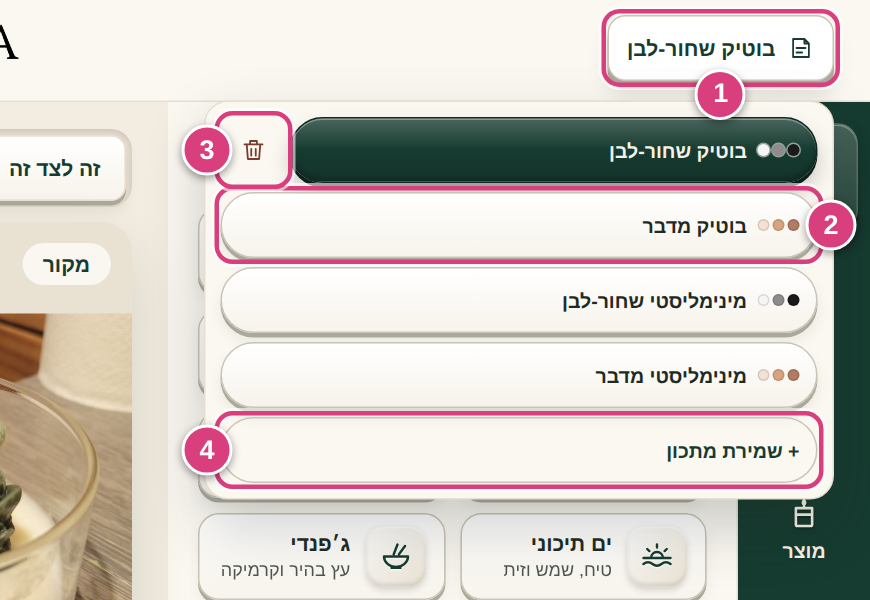
רשימת המתכונים פתוחה
דוגמה: בחרת בוטיק, פלטת מדבר, משטח טיח, ותאורת חלון והתוצאה יפה? לוחצים "+ שמירת מתכון", כותבים "מדבר חם לנרות" ושומרים. מהיום זה אריח אחד.
סנכרון: המתכונים, רשימת "אף פעם לא" ופריסות המיתוג נשמרים בענן, ולכן מופיעים גם בטלפון וגם במחשב. ענן ירוק בכותרת = מסונכרן.
7 · סטודיו התמונות של רבקה
היצירה עצמה
יוצרים, מסתכלים, מדרגים
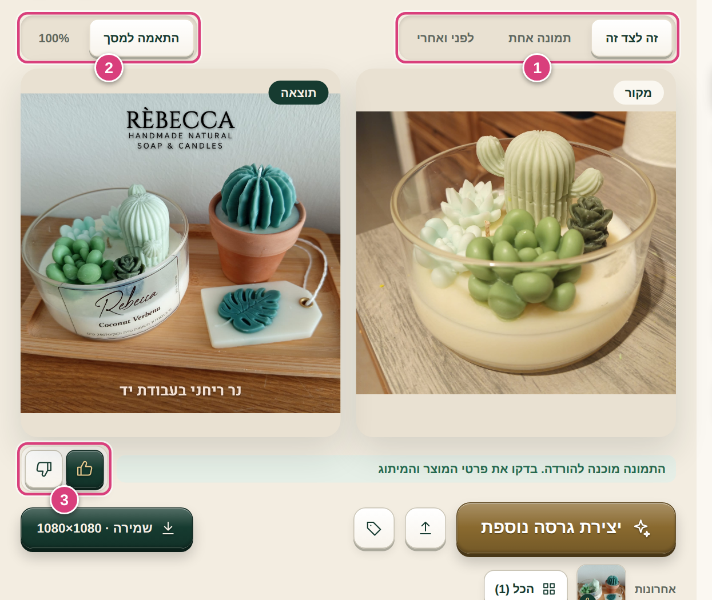
- מצב תצוגה"זה לצד זה", "תמונה אחת", או "לפני ואחרי".
- התאמה למסך / 100%התמונה תמיד מוצגת שלמה. 100% להסתכל על פרטים קטנים.
- דירוגאגודל למעלה או למטה. נשמר יחד עם התמונה וההגדרות שיצרו אותה.
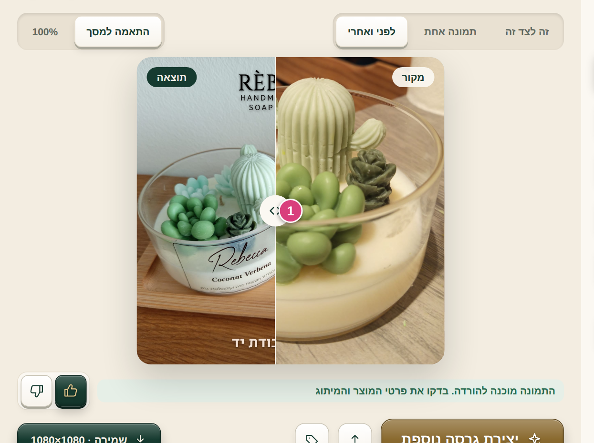
"לפני ואחרי": גוררים את הקו האמצעי, או משתמשים בחיצים במקלדת
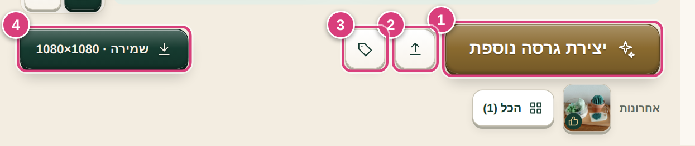
- יצירת תמונההכפתור הזהוב. אחרי היצירה הוא הופך ל"יצירת גרסה נוספת".
- החלפת צילוםמעלה צילום אחר.
- עריכת מיתוגפותח את עורך הלוגו והסלוגן.
- שמירהשומר את התמונה המוכנה בגודל הפורמט.
טיפ: לא אהבת? אל תשני הכול. שנו דבר אחד, למשל המשטח או התאורה, וצרו שוב. כך מבינים מה גורם למה.
8 · סטודיו התמונות של רבקה
הלוגו והסלוגן
מיתוג ועורך המיתוג
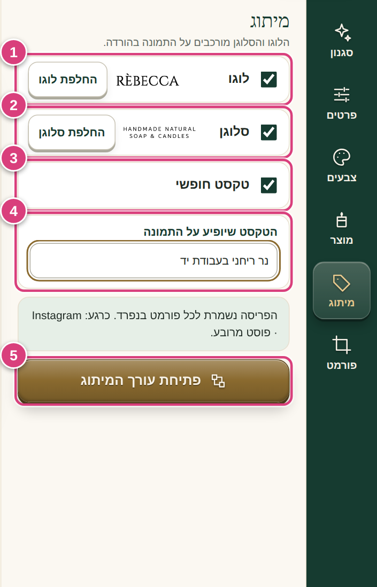
- לוגומסמנים כדי להציג. "החלפת לוגו" להעלאת אחר.
- סלוגןאותו דבר.
- טקסט חופשילמשל "נר ריחני בעבודת יד".
- הטקסטכותבים כאן. אפשר למחוק ולכתוב מחדש.
- פתיחת העורךלהזיז ולשנות גודל.
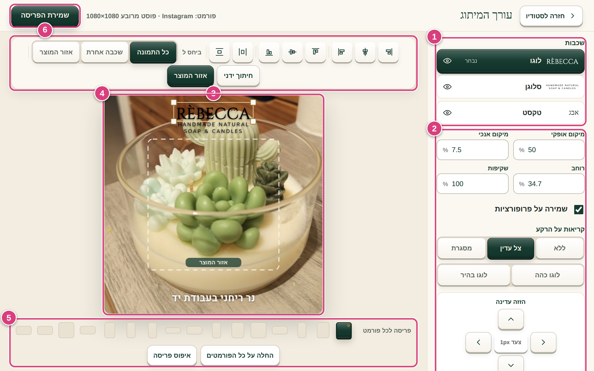
- שכבותלוגו, סלוגן, טקסט. העין מציגה או מסתירה.
- מיקום וגודלבאחוזים, בדיוק של 0.1. כולל "קריאות על הרקע" וחיצי הזזה עדינה.
- סרגל יישורשש פעולות יישור ופיזור, ביחס לתמונה, לשכבה אחרת, או לאזור המוצר.
- הבדגוררים ישירות. הקווים הורודים מצמידים למרכז ולשוליים. הקו המקווקו הוא אזור המוצר.
- פריסה לכל פורמטכל גודל תמונה זוכר פריסה משלו.
- שמירת הפריסהוחוזרים לסטודיו.
מה שרואים הוא מה שנשמר. התמונה בעורך זהה לקובץ שיורד אחר כך, בדיוק.
אם הלוגו לא קריא על הרקע: מוסיפים "צל עדין" או "מסגרת", או מחליפים ל"לוגו בהיר" או "לוגו כהה".
9 · סטודיו התמונות של רבקה
לכל רשת חברתית
פורמטים ושמירה
כל פלטפורמה רוצה גודל אחר. בוחרים פורמט, והתמונה נחתכת ומתכווננת בדיוק לו.
- הפורמט הנבחרהברירה הנוכחית. השם הכתוב על כפתור "שמירה" משקף את הגודל.
- שישה־עשר פורמטיםאינסטגרם, פייסבוק, וואטסאפ, טיקטוק, פינטרסט, לינקדאין, יוטיוב ו־X.
| אני רוצה | בוחרת |
|---|
| פוסט בפיד באינסטגרם | אינסטגרם · פוסט מרובע (1080×1080) או לאורך (1080×1350) |
| סטורי, ריל או סטטוס | סטורי (1080×1920), או וואטסאפ · סטטוס |
| דף העסק בפייסבוק | פייסבוק · תמונת נושא (1640×624) |
| הצמדה בפינטרסט | פינטרסט · סיכה (1000×1500) |
איך שומרים
לוחצים "שמירה"במחשב: הקובץ יורד לתיקיית ההורדות.
בטלפוןאם לא יורד, לוחצים "פתיחת התמונה בחלון נפרד לשמירה", לחיצה ארוכה, ו"שמירה לגלריה".
10 · סטודיו התמונות של רבקה
נוחות
היסטוריה וצבעי הממשק
ההיסטוריה שלי
הסטודיו זוכר את 30 התמונות האחרונות. בשורה "אחרונות" מתחת לתמונה אפשר ללחוץ על ממוזערת כדי לחזור אליה. "הכל" פותח גלריה.
- כרטיס תמונהמציג את הסגנון והפלטה שיצרו אותה, ואת הפורמט. לחיצה טוענת אותה, יחד עם כל ההגדרות.
- סגירהחזרה לסטודיו.
היסטוריה נשמרת בדפדפן של המכשיר הזה. בטלפון ובמחשב ההיסטוריה נפרדת. מה שמסונכרן בין המכשירים הם ההגדרות והמתכונים, לא התמונות.
צבעי הממשק
כפתור הפלטה בכותרת צובע את כל הסטודיו באחת מ־20 הפלטות. זה רק לנוחות ולנעימות, ולא משפיע על התמונה. בחירה אחת נשמרת בכל המכשירים.
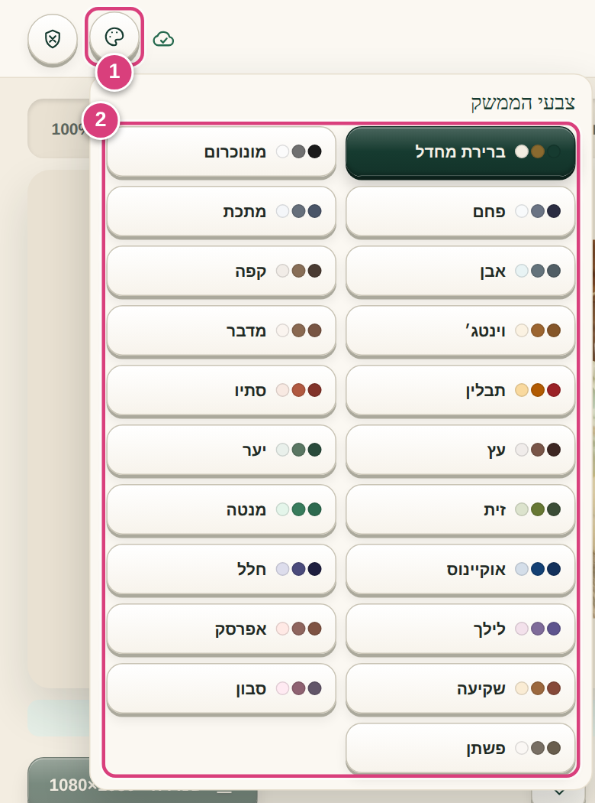
רשימת הפלטות
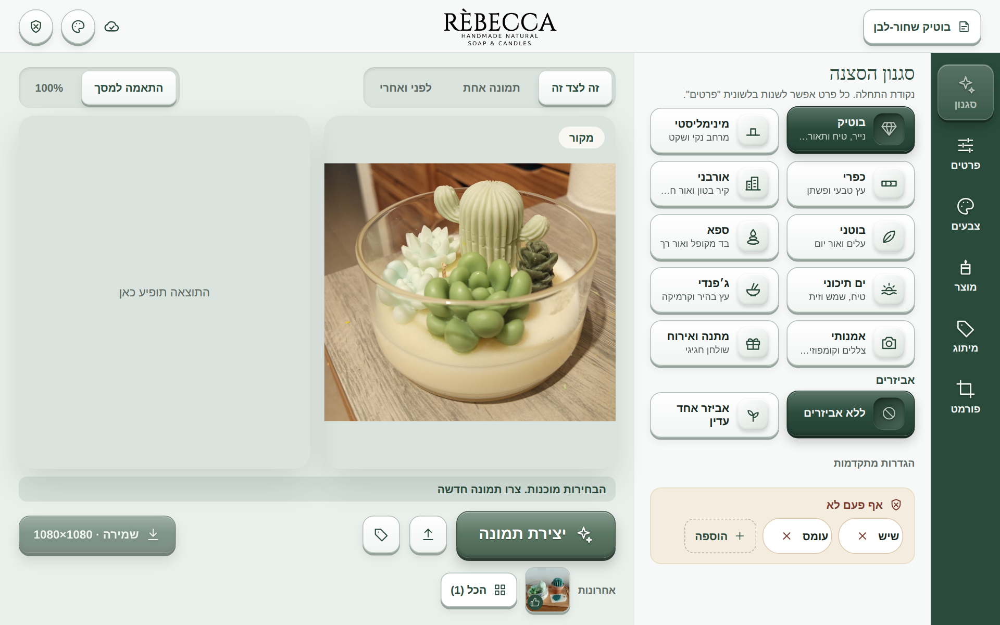
למשל "יער": כל הממשק מתכוונן
11 · סטודיו התמונות של רבקה
בכל מקום
בטלפון
הכול זהה לגמרי למחשב. רק הסידור משתנה: לשונית פעילה אחת, ומחליפים בין הלשוניות בפס הירוק.
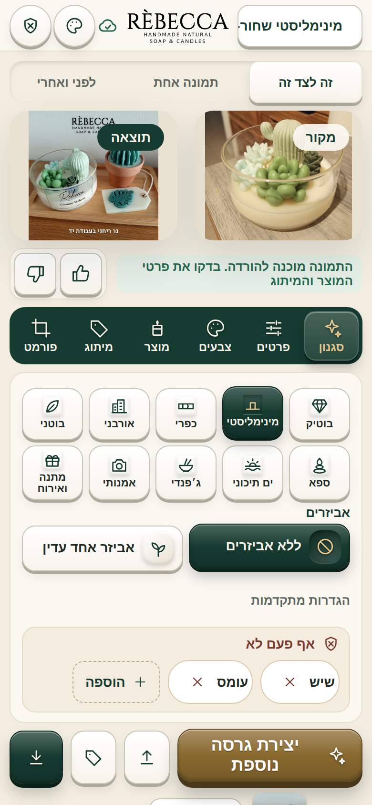
המסך הראשי
תמונה, אחר כך לשוניות
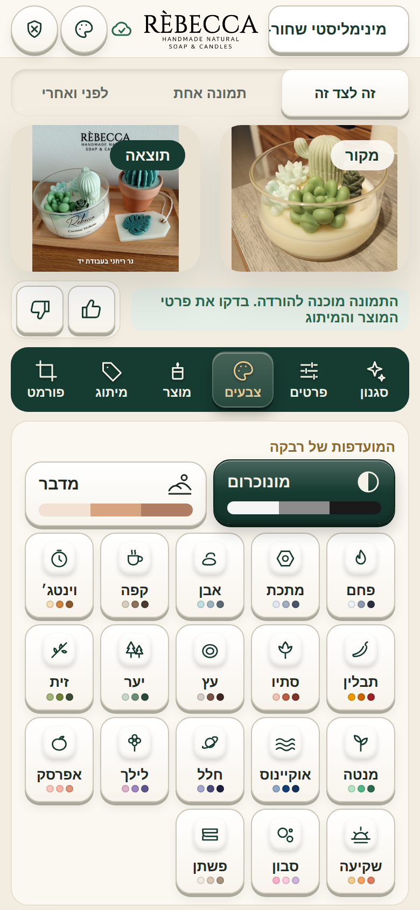
לשונית צבעים
בלי גלילה בתוך הלשונית
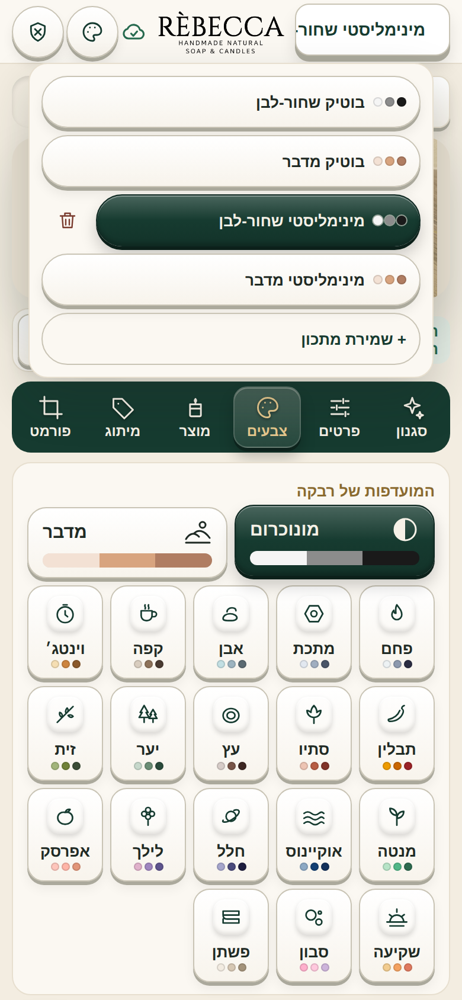
מתכונים
נפתחים מהכפתור העליון
להוסיף למסך הבית
אייפון
- פותחים את האתר בדפדפן Safari.
- לוחצים על סימן השיתוף (ריבוע עם חץ).
- "הוספה למסך הבית".
אנדרואיד
- פותחים את האתר בדפדפן Chrome.
- שלוש הנקודות בפינה.
- "הוספה למסך הבית" (או "התקנת אפליקציה").
טיפ: מסובבים את הטלפון לרוחב כדי לראות תמונה גדולה יותר, ומחזירים לאורך כדי לבחור אפשרויות.
12 · סטודיו התמונות של רבקה
איכות מתחילה בצילום
איך מצלמים את התמונה שמעלים
הסטודיו משנה את הסביבה, ושומר על המוצר. ככל שהמוצר ברור יותר בצילום, התוצאה נאמנה יותר.
כן
- אור יום, ליד חלון, בלי פלאש.
- המוצר כולו בפריים, עם מעט מקום סביבו.
- התווית והכיתוב פונים למצלמה וקריאים.
- צילום ישר וחד. מחכים שהטלפון יתפוס פוקוס.
- רקע פשוט, ככל האפשר.
- מוצר אחד או מארז אחד בכל תמונה.
עדיף לא
- צילום מרחוק מאוד, כשהמוצר קטן.
- הברקות חזקות על הזכוכית או על התווית.
- כמה מוצרים שונים זה על זה.
- תמונה מטושטשת או חשוכה.
- אצבע או יד על המוצר.
הסטודיו נאמן למוצר: הוא מקפיד על מספר המוצרים, הצורה והתוויות, ולא ממציא מוצרים. אם משהו בכל זאת השתנה, מחליפים צילום או מנסים שוב.
ללא אביזרים? זו ברירת המחדל. בלשונית "סגנון" אפשר לבחור "אביזר אחד עדין". אביזרים עשירים מוסתרים בהגדרות מתקדמות.
בקשה מיוחדת היא המקום לדברים שנראים לך חשובים, למשל "אור רך משמאל", או "בלי צמחים". כתבי בעברית, משפט קצר.
13 · סטודיו התמונות של רבקה
אם משהו לא עובד
שאלות ותשובות
הסטודיו לא נפתח / מבקש שם משתמש וסיסמה שוב ושוב
שם המשתמש הוא rebecca באותיות קטנות. הסיסמה היא זו שבעמוד 2. אם עדיין לא נכנס, פנו לבן זוגך.
כתוב "יש להגדיר סיסמת כניסה בהגדרות השרת"
נכנסת לכתובת בדיקה ולא לכתובת הראשית. נכנסים לכתובת מעמוד 2.
כתוב "מפתח ה־API או הרשאת מודל התמונות דורשים בדיקה"
זו בעיה בחיבור ל־OpenAI, לא בשום דבר ששגית בו. מעבירים את ההודעה, כולל ה"פירוט מ־OpenAI" שמופיע מתחתיה, לבן זוגך.
היצירה לוקחת הרבה זמן
בדרך כלל כחצי דקה, לפעמים יותר. מחכים בלי ללחוץ שוב ושוב: כל לחיצה היא יצירה נוספת בתשלום.
התמונה יצאה לא כמו שרציתי
לוחצים "יצירת גרסה נוספת". אם עדיין לא, משנים דבר אחד (משטח, תאורה, בקשה מיוחדת). אם המוצר השתנה, מחליפים לצילום חד וברור יותר.
הלוגו או הטקסט מסתירים משהו או לא קריאים
לשונית "מיתוג" ← "פתיחת עורך המיתוג". מזיזים ומקטינים, או בוחרים צל עדין ולוגו בהיר או כהה.
איבדתי תמונה שיצרתי
שורת "אחרונות" או "הכל". הן שמורות במכשיר הזה (עד 30). אם ניקית את נתוני הדפדפן, הן נמחקות.
הענן בכותרת עם קו חוצה
אין סנכרון כרגע, ההגדרות נשמרות במכשיר הזה בלבד. ברגע שחוזר החיבור, הוא יתעדכן.
ה"שמירה" לא מורידה כלום בטלפון
לוחצים על "פתיחת התמונה בחלון נפרד לשמירה", לחיצה ארוכה על התמונה ואז "שמירה לגלריה".
14 · סטודיו התמונות של רבקה
דף עזר
הכול על דף אחד
שגרה של תמונה
- העלאת צילום (חד, באור יום).
- לשונית "מוצר": מה צילמתי.
- "סגנון" ו"צבעים", או מתכון.
- "יצירת תמונה", ממתינים.
- לא אהבתי? שינוי אחד ועוד פעם.
- "מיתוג": לוגו, סלוגן, טקסט.
- פורמט, ואז "שמירה".
מה בכל לשונית
- סגנון: המראה הכללי, אביזרים, "אף פעם לא".
- פרטים: משטח, תאורה, רקע, בקשה מיוחדת.
- צבעים: 20 פלטות. מדבר ומונוכרום למעלה.
- מוצר: סוג, מצב נר, זווית, אירוע.
- מיתוג: לוגו, סלוגן, טקסט, עורך.
- פורמט: אינסטגרם, פייסבוק, וואטסאפ ועוד.
קיצורים בעורך המיתוג
- חצים: הזזה של פיקסל אחד.
- Shift + חץ: הזזה של 10.
- גרירה: הזזה חופשית עם הצמדה.
- ידיות בפינות: שינוי גודל בפרופורציות.
- "החלה על כל הפורמטים": אותה פריסה לכולם.
כמה כללי זהב
- כל "יצירה" עולה כסף קטן. מכינים, ואז לוחצים.
- שינוי צבעי ממשק, תצוגה ומיתוג: חינם.
- המתכון האהוב עליי נשמר כמתכון.
- הסיסמה נשארת אצלי בלבד.
- משהו מוזר? צילום מסך והודעה לבן הזוג.
בהצלחה, רבקה!
כל תמונה יפה מתחילה בצילום אחד.
15 · סטודיו התמונות של רבקה